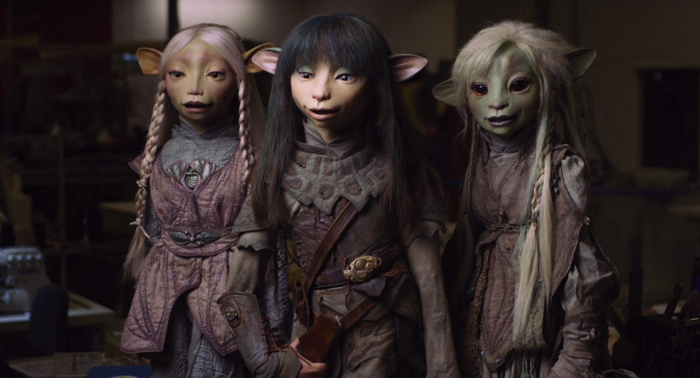

About Deet
Deet (born Deethra) was a Gelfling of the Grottan Clan who lived during the late Age of Division. Deet experienced a vision by touching Vliste-Staba, the Sanctuary Tree located in the Mountains of Grot, and joined the Gelfling resistance.
General Info
| Species: | Gelfling |
| Gender: | Female |
| Occupation: | Animal Carer |
| Family: | Lath'N (father), Mitjan (father), Bobb'N (brother) |
| Clan: | Grottan |
| Residence: | Domrak, Caves of Grot |
| Birth: | Unknown |
| Death: | Alive |
| Puppeteer / Animator: | Beccy Henderson / Katherine Smee |
| Appeared in: | The Dark Crystal: Age of Resistance Flames of the Dark Crystal The Dark Crystal: Age of Resistance Tactics |
The Sanctuary Tree passes a vision to Deet
Characteristics
- She is small by Gelfling standards
- A skilled flyer
- An optimist at heart, she rarely lost hope in the face of adversity
- She has a strong connection to nature, especially animals
- She is eager to help others, even when such actions are beyond her capacity
- She would do anything to protect her friends and family when the Skeksis threatened her clan, even resorting to lethal force when sufficiently provoked
Behind the Scenes
Deet was largely based on the character of Thurma, a character from the scrapped The Power of the Dark Crystal movie: both were conceived as large-eyed heroines dwelling in an underground realm who venture to the surface world in order to save their respective people. According to Jeffrey Addiss, Deet was meant to act as the audience's "eyes and ears" into Thra's natural world, while Halle Stanford described her as "the ultimate environmental activist". The Deet puppet's eyes were so large, that there was no space in the head to incorporate servo-triggered eyelids, so the act of blinking had to be added digitally. Beccy Henderson incorporated green aventurine, a quartz popularly known as the "stone of opportunity", to Deet's clothing, in order to emphasize Deet's "confidence to change while reinforcing leadership qualities”.
Brea, Rian & Deet
Deets Companions
Deet makes many friends and allies on her journey through Thra. Deet's closest friend and Paladin is Hup, a brave & humble Podling who vows to protect her on her treacherous journey to Ha'rar. Click on the links below to find out more about Hup and meet Deet's other companions: